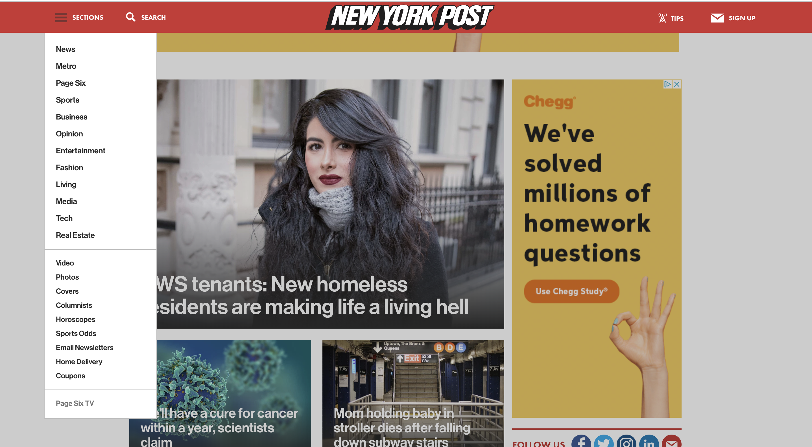
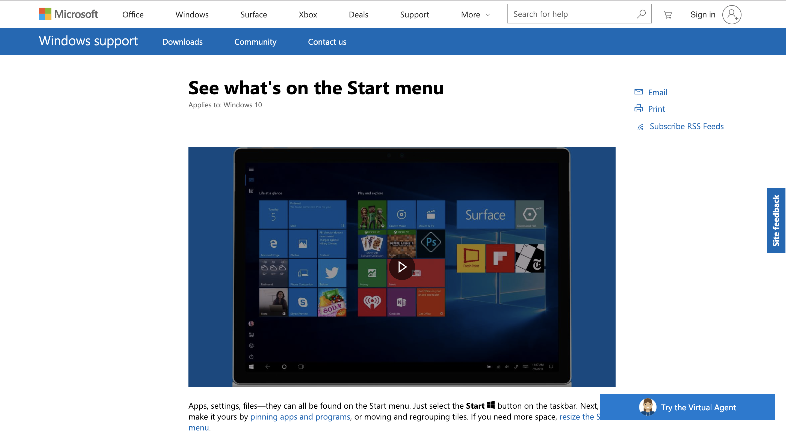

Core Interaction

- This website is a source for breaking news about New York, sports, entertainment and more.
- Some more of the content includes, Metro, Business, Fashion, Living, Tech and RealEstate.
- The website is really clear with its navigation. The sections header remains constant on every page,
providing the same list. Clicking on the New York Post title returns the viewer to the main page.
Another website

- The Swedish website is an online marketplace to purchase vehicles
- The wesbite is selling drones, bikes, Jeeps, ATVs and much more.
- The website is a mess of images and color. there is no inidication of any sort of structure whatsoever
A bunch of sections like index are at the top of the page mixed in with the images. It is hard to diffrentiate
betweent the two. Almost every single thing on the home page in a link. Some of the links lead to random
pages like
the Norwegian Consumer Council.
A third website

- This website is made for Microsoft.
- The contents of the website include information on all of Microsofts devices like xBOX, Windows and Office.
- The sections of the website are really well organised. They are all lined at the top of the page and the
Microsoft title serves as a link for the home page. Each of the sections (Surface, Windows, Deals) contains
subsections
which contain drop down bars.